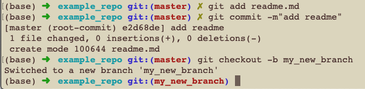
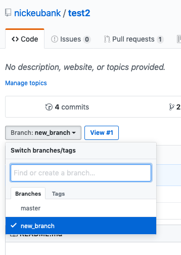
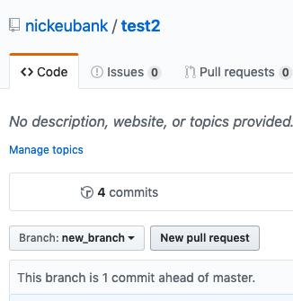

Git and Github, Part 1#
In these exercises, we’ll be practicing creating and contributing to projects using the “Github Flow” workflow you can find summarized here. Note this is not the only workflow out there – different companies or groups will often develop their own modification of this basic strategy – but most are pretty similar to this approach.
Part 0: Change your default editor!#
By default, when git needs you to label a commit, it will open an editor called vim that is very hard to work with (it’s not just weird – it’s even hard to get out of once it’s opened!)
So before you do anything else, first change your default editor. You can do this with the command:
git config --global core.editor "COMMANDTOLAUNCHYOUREDITOR"
If you have VS Code installed and the command line tool setup (i.e. you set up VS Code so that if you type code in the command line, VS Code opens, as discussed here), then I would do:
git config --global core.editor "code --wait"
NOTE: the way this command works is that if git has to open an editor to, say, ask you to review a commit message, it will open VS Code. Then it will wait until you close the window it has opened in VS Code (presumably after you’ve made the edits you want to make). So you do have to close the window it opens to advance.
If not, then the best option is probably to use nano, which is an in-terminal editor we’ve discussed before that’s much easier to use than vim, and which you should already have if you’re using a bash console:
git config --global core.editor "nano"
Part 1: Making a New Repo!#
To begin, we will create a repository where we will use data from the World Development Indicators to quickly plots GDP per capita against infant mortality.
Exercise 1#
On Computer A, go to github and create a new repository “GDP_and_CO2”. When creating the repository, also make sure to add a README file.
Exercise 2#
Go to Settings and add the user of Computer B as a collaborator. That will empower you to access and work with the data in the repository from either computer.
Exercise 3#
Create a local copy of the repository on your Computer A using git clone and the URL provided for cloning your repository. Note that you cannot just use the URL for your repository’s webpage! If you use that, when you push and pull you’ll be trying to push and pull to a webpage, not to a git server. The URL you need for cloning should end in .git.
Note: Cloning a repository on github is one of two ways of getting a repository setup on your computer. The other option is to make a folder on your computer, make it a git repo with the command git init, add some files and commit then, go to github, create an empty repository, add that repository’s URL to as the “remote” address in the repository on your computer using git remote add origin www.github.com/[path to your repo].git, then pushing. This is good to know in case you already have a repo with a lot of files on your computer. But if you’re starting a new, empty repo, it’s much easier to use git clone, since cloning also ensures that your repo knows the URL of the github repository it should connect to when doing git push and git pull.
Note: The folder you have now cloned is your git repository. Everything from the level of the folder you just cloned down is part of that repository, so don’t put anything into that folder you don’t want in the repository. And don’t put other repositories into that repository!
Exercise 4#
Now that you’ve cloned your repository, on Computer A edit the README.md file by adding some text about the project. Then git add those changes, git commit, and push. Check on github to ensure that your edits are evident there.
Note you can edit your README.md file any way you want! You can use Atom, nano, RStudio, VS Code, or any other editor. This is a critical thing to understand about git and github: it is a system for managing your files, not for managing your entire workflow. You still edit and run your code the way you always have. In this case, README.md is just a text file on your computer you can work with like any other text file.
Part 2: Making a Pull Request#
As you’ve read, a common way to work with a github repository is to create branches where you develop new code. Creating a branch, as the name implies, is a way of creating a version of your repository that branches off from the main branch at a point. Once created, a branch exists independently of the main branch so that you can make edits to your code without worrying about interfering with anyone else who wants to use the main branch. This is useful in software (since people may be running the main branch), but it’s also often useful in data science (where you may be experimenting with changing how variables are defined, and won’t want that to impact other people till you’ve decided what you want to do.
Once you’re done working on a branch, you may decide that the changes you’ve made are amazing, and you want to merge those changes back into the main branch (you also may not! It’s always ok to throw away a branch that didn’t work! Branches are for experimenting safely).
In order to ensure that only good code ends up in the main branch, it is common practice when working on teams to not just merge you branch back into the main branch. Instead, you submit a “Pull Request” on github, which is basically a request (on github) for other people to come review your code. Pull requests, in other words, are primarily a mechanism for peer review. So let’s make our first pull request (common referred to as a PR)!
Exercise 5#
Still on Computer A, let’s create a new branch we can experiment on. We can do this in one of two ways:
We can type
git branch <new_branch_name>(to create the branch), thengit checkout <new_branch_name>to switch to that branch, orWe can type
git checkout -b <new_branch_name>to both create a new branch and switch to that branch.
“Switching” branches means that git (potentially) changes what files are visible to your computer and operating system. Because our new branch is, well… new, it still looks exactly the same as our main branch, so you won’t see any changes in your files. If you’re using Oh-My-Posh on Windows or Oh-My-Zsh on a Mac, though, you can see what branch your on by looking at your command line prompt. It should move from showing either “main” or “main” to your new branch name (here: “my_new_branch”) when you switch:
Note: the primary branch of a github repo USED to be called master, but as of late 2020 the default is not main, so you’ll likely see both for a while!

Now any changes you make and commit to the files in your repository will be changes made to the active branch, not to main.
Exercise 6#
Still on Computer A, let’s start writing some analysis code! Before we start, though, an important note: Git is only really build for simple, plaintext files, so please don’t use Jupyter Notebooks (we’ll discuss that in more detail below). You can use text files you edit and work with in VS Code, but not notebooks. For a refresher on how to use text files in VS Code (in a manner analogous to RStudio) see Jupyter Exercises.
OK, so now let’s create a regular Python (.py) analysis file in our repository. If you’re using Jupyter Lab, just create a new textfile, save it into the repository folder, then get to work (right-click the text file, select “Create Console for Editor”, then select Python 3 to create a kernel where you can run your code as you work).
In particular, import World Develoment Indicators from this url using pd.read_csv: https://media.githubusercontent.com/media/nickeubank/MIDS_Data/main/World_Development_Indicators/wdi_small_tidy_2015.csv
Then pull out the columns:
‘Mortality rate, infant (per 1,000 live births)’
‘GDP per capita (constant 2010 US$)’
‘Country Name’
and plot mortality against GDP per capita.
Exercise 7#
Once you’re done, add and commit the new analysis file (from in your command line session). Then push these files to github.
When you try and push them to github, you will be told that you can’t push them because there’s no branch on github to receive the push:
fatal: The current branch test has no upstream branch.
To push the current branch and set the remote as upstream, use
git push --set-upstream origin new_branch
To have this happen automatically for branches without a tracking
upstream, see 'push.autoSetupRemote' in 'git help config'.
That’s because you created your new branch locally, but it doesn’t exist yet on github.
Follow the helpful directions you’ve been given to push in a way that also tells github to make a branch to receive your push: git push --set-upstream origin [the name of your new branch]
Exercise 8#
Now in your browswer, navigate to the repository on github. There, switch over to your new branch:

And look for the “Pull Request” button:

Exercise 9#
This should take you to a Pull Request screen where you can title your PR and add comments. In the comments, ask the person who has Computer B to review your PR (you can use the @ and their user name to address them. So type @otheruser would you please review this?. Then click “Submit Pull Request”.
Part 3: Reviewing a Pull Request#
Exercise 10#
Now on Computer B, navigate to the repository from your browser. You should now be able to see your partner’s PR.
From Computer B, review the PR from Computer A. You can do this on two levels:
Click on the “Files Changed” tab to see what code is being added or changed in this PR. You can also add comments here: click the plus sign that appears when you mouse over a number and leave a comment about a specific line of code (like “you need more comments to explain this code!”).
You can also pull this branch so you can run it on your own computer.
Exercise 11#
Let’s try the second strategy. On Computer B, clone the repository.
Exercise 12#
Navigate (from the command line) into the now cloned repository. By default, you should be on the main branch.
Remember when I said that switching branches changes the files visible to the operating system? Open your repository folder using your operating system (File Explorer or Finder) and look in it. If you’re on the main branch, you won’t see the new analysis file.
Exercise 13#
Now, from the command line, switch to the branch you’re reviewing for the PR (it should already be there, so you just have to do git checkout <branch_name>).
IF THE BRANCH ISN’T THERE: run git branch -l to see all the branches you’ve pulled just to be sure. If it isn’t there, you may have to pull it explicitly: run git pull origin <branch_name> (you don’t need the angle brackets, just making clear that’s where you put the name of the branch).
In this case, origin tells git you’re looking for a branch on the remote server whose alias is origin (this is the github repo that you cloned) whose name is branch_name. Then you should be able to check it out.
Exercise 14#
Now look at the folder using File Explorer or Finder again – see how the analysis file has appeared? Open it in VS Code on Computer B and see if you can get it to run.
Exercise 15#
Now go back to github and the PR, and suggest one change for the person who wrote the original code to make.
Part 4: Revising a Pull Request#
Updating a PR is no different from changing any project in github – just open your files, edit your code, then add, commit, and push your changes, and the changes manifest in the PR.
Exercise 16#
On Computer A, make the changes suggested by the Computer B reviewer. Add, commit, and push those changes.
Exercise 17#
On Computer B, look to see that those changes are present, then click “Merge this PR”! Now if you look at the main branch of your repository, you should see that the analysis file now appears on main.
Congratulations!#
You’ve completed your first full git / github cycle!
Tomorrow, the adventure continues!